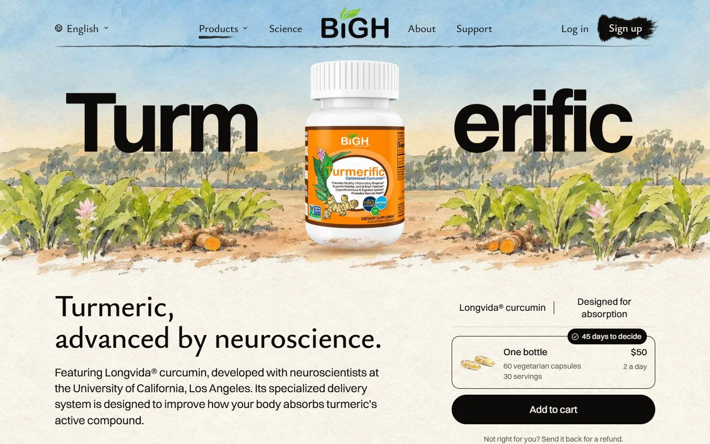
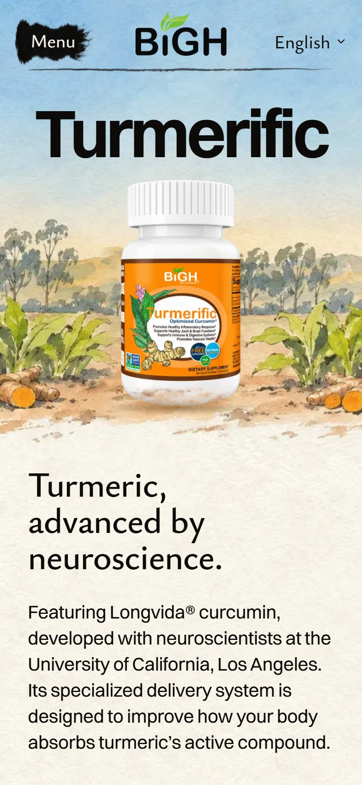
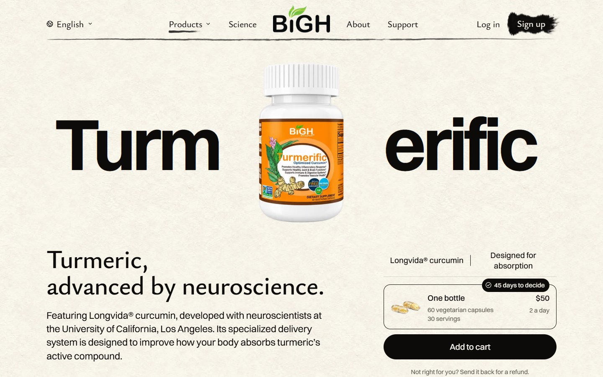
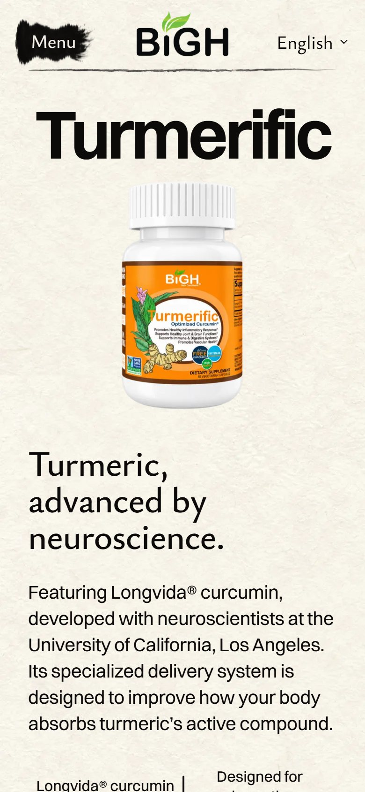
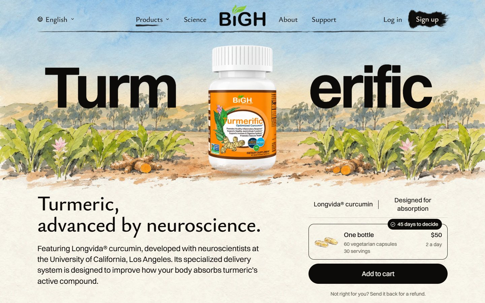
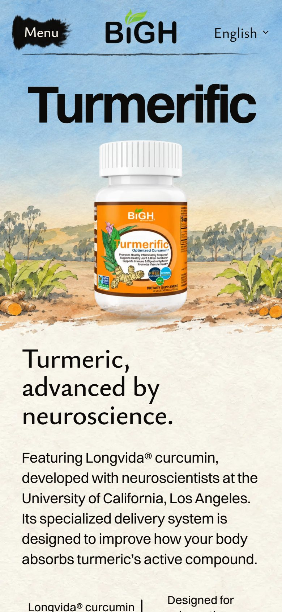
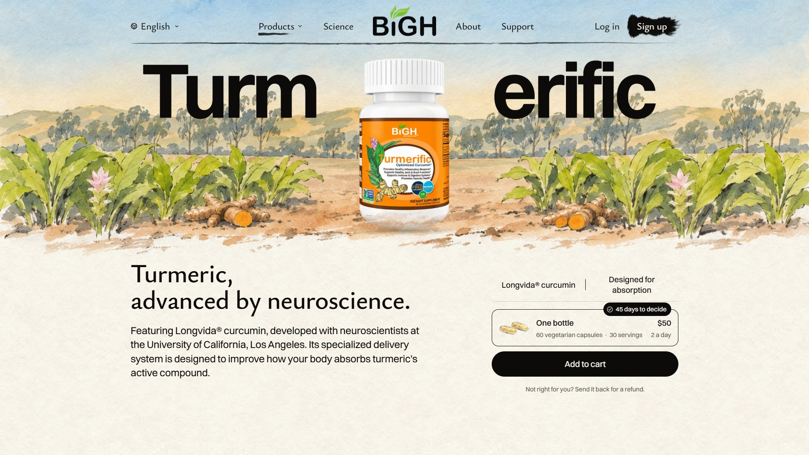
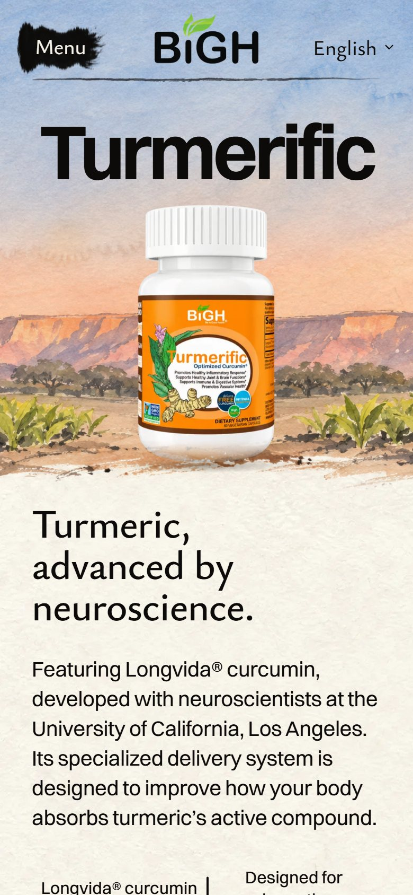

<title>Turmerific First Screen</title>
<meta name="claude:viewport-fit-sides" content="cover">
<link rel="preconnect" href="https://fonts.googleapis.com">
<link rel="preconnect" href="https://fonts.gstatic.com" crossorigin>
<link rel="stylesheet" href="https://fonts.googleapis.com/css2?family=Ysabeau:wght@500;600&family=Inter:wght@400;500;600&display=swap">
<style>
  /* One column of rice paper, like the site itself: the pictures are the page. Single look on
     purpose (the mockups are paintings on paper), so every color is set here. */
  :root {
    --paper: #f3efe6;
    --ink: #1b1915;
    --muted: #5c564c;
    --line: #d8d1c3;
    --pick: #1b1915;
    --gold: #a2620f;
    --display: "Ysabeau", "Iowan Old Style", Georgia, serif;
    --body: "Inter", system-ui, -apple-system, "Segoe UI", sans-serif;
    color-scheme: light;
  }
  body {
    background: var(--paper);
    color: var(--ink);
    font-family: var(--body);
    font-size: 17px;
    line-height: 1.55;
    padding-left: max(16px, env(safe-area-inset-left, 0px));
    padding-right: max(16px, env(safe-area-inset-right, 0px));
    padding-block: 28px 64px;
  }
  main { max-width: 1080px; margin: 0 auto; display: grid; gap: 56px; }
  h1, h2 { font-family: var(--display); font-weight: 600; line-height: 1.08; text-wrap: balance; margin: 0; }
  h1 { font-size: clamp(34px, 6vw, 56px); }
  h2 { font-size: clamp(26px, 3.6vw, 36px); }
  p { margin: 0; max-width: 62ch; }
  .lead { font-size: 19px; }
  .muted { color: var(--muted); font-size: 15px; }
  header { display: grid; gap: 14px; }
  ul.plain { margin: 0; padding-left: 1.1em; display: grid; gap: 4px; }
  .idea { display: grid; gap: 16px; padding-top: 28px; border-top: 1px solid var(--line); }
  .idea-head { display: flex; flex-wrap: wrap; align-items: baseline; gap: 10px 16px; }
  .tag {
    display: inline-flex; align-items: center; justify-content: center;
    min-width: 40px; height: 40px; border-radius: 999px; border: 1.5px solid var(--ink);
    font-family: var(--display); font-weight: 600; font-size: 22px;
  }
  .idea.pick .tag { background: var(--pick); color: var(--paper); }
  .score { font-variant-numeric: tabular-nums; color: var(--muted); font-size: 15px; }
  .mine { font-size: 14px; font-weight: 600; letter-spacing: 0.02em; color: var(--gold); }
  .shots { display: grid; grid-template-columns: minmax(0, 3.2fr) minmax(0, 1fr); gap: 16px; align-items: start; }
  figure { margin: 0; display: grid; gap: 6px; min-width: 0; }
  figure img { width: 100%; height: auto; display: block; border: 1px solid var(--line); border-radius: 6px; background: #fff; }
  figcaption { font-size: 14px; color: var(--muted); }
  .why { display: grid; gap: 6px; }
  .reply { display: grid; gap: 8px; padding: 18px 20px; border: 1.5px solid var(--ink); border-radius: 12px; }
  @media (max-width: 640px) {
    .shots { grid-template-columns: minmax(0, 1fr) minmax(0, 0.62fr); gap: 10px; }
  }
</style>

<main>
  <header>
    <p class="muted">BiGH website · product pages, part 2 · November 16, 2026</p>
    <h1>Turmerific’s first screen</h1>
    <p class="lead">Advanced OPC now stands in a vineyard, and it is live. Turmerific gets the same treatment: its own California place, where turmeric grows. Pick one.</p>
    <p class="muted">Mockups: new paintings laid on the live page in a browser. Nothing is built yet. The real bottle photo is unchanged.</p>
  </header>

  <section class="idea pick" aria-labelledby="built-title">
    <div class="idea-head"><span class="tag">A</span><h2 id="built-title">Built: The field</h2><span class="score">8.5/10</span><span class="mine">Your pick</span></div>
    <div class="shots">
      <figure><figcaption>Built page, computer</figcaption></figure>
      <figure><figcaption>Built page, phone</figcaption></figure>
    </div>
    <ul class="plain muted">
      <li>The name is lifted as far as in this mockup. On a phone the painting is drawn closer, so turmeric and a dug root show on each side.</li>
      <li>Checked on the built site: every product page, the homepage and the menu pass. Not live yet.</li>
      <li>What holds it back: the tall eucalyptus run behind the bottom of the name; on very wide screens the leaves reach its foot.</li>
    </ul>
  </section>

  <section class="idea" aria-labelledby="now-title">
    <div class="idea-head"><h2 id="now-title">Now</h2><span class="score">5/10 at first glance</span></div>
    <div class="shots">
      <figure><figcaption>Computer, 1440 wide</figcaption></figure>
      <figure><figcaption>Phone</figcaption></figure>
    </div>
  </section>

  <section class="idea pick" aria-labelledby="a-title">
    <div class="idea-head"><span class="tag">A</span><h2 id="a-title">The field</h2><span class="score">8.5/10</span><span class="mine">My pick</span></div>
    <div class="shots">
      <figure><figcaption>Computer</figcaption></figure>
      <figure><figcaption>Phone</figcaption></figure>
    </div>
    <div class="why">
      <p>A small Ventura County farm in late-afternoon light: rows of turmeric, a few roots just dug, a eucalyptus windbreak behind.</p>
      <ul class="plain muted">
        <li>Shows where the golden compound comes from: the cut roots glow orange-gold.</li>
        <li>The eucalyptus row says California farm at once, and it is not OPC’s golden hills.</li>
        <li>Weak spot: the tall trees run behind the bottom of the name.</li>
      </ul>
    </div>
    <figure><figcaption>A on a big screen, 1920 wide</figcaption></figure>
  </section>

  <section class="idea" aria-labelledby="b-title">
    <div class="idea-head"><span class="tag">B</span><h2 id="b-title">The garden wall</h2><span class="score">7.5/10</span></div>
    <div class="shots">
      <figure><figcaption>Computer</figcaption></figure>
      <figure><figcaption>Phone</figcaption></figure>
    </div>
    <div class="why">
      <p>A sunny backyard kitchen garden: turmeric along a white stucco wall, a lemon tree peeking over.</p>
      <ul class="plain muted">
        <li>Warm and homely; the name stands on the wall like a sign.</li>
        <li>Weak spots: the lemons sit right behind “erific”, and on a phone the wall reads as a plain white band.</li>
      </ul>
    </div>
  </section>

  <section class="idea" aria-labelledby="c-title">
    <div class="idea-head"><span class="tag">C</span><h2 id="c-title">Ojai at dusk</h2><span class="score">6.5/10</span></div>
    <div class="shots">
      <figure><figcaption>Computer</figcaption></figure>
      <figure><figcaption>Phone</figcaption></figure>
    </div>
    <div class="why">
      <p>Ojai’s “pink moment”: the bluffs glow gold and rose at sunset over a turmeric field.</p>
      <ul class="plain muted">
        <li>The warmest color, a golden glow like curcumin itself.</li>
        <li>Weak spot: the flat red cliffs read like Arizona, not California, to most eyes.</li>
      </ul>
    </div>
  </section>

  <section class="reply" aria-labelledby="reply-title">
    <h2 id="reply-title">Next</h2>
    <p>You picked <strong>A</strong>, and it is built. Say “put it live” to publish it, or tell me what to change.</p>
  </section>
</main>
